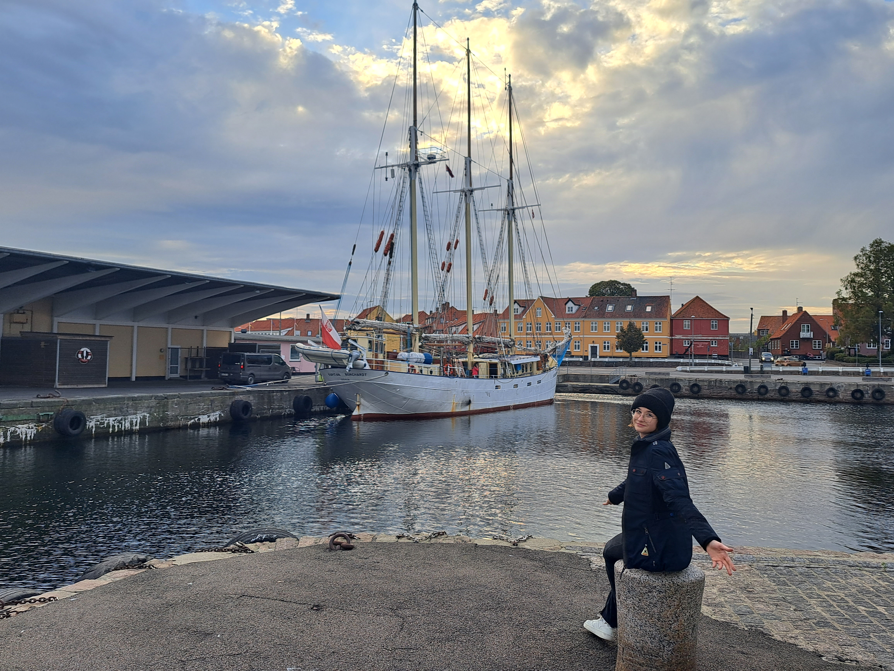

Od pierwszej Antilki na jeziorze po nocne wachty na morzu

Jak zaczęła się moja przygoda z wiatrem?
Wszystko zaczęło się dość niewinnie – od wakacyjnego obozu żeglarskiego na Mazurach i Antili 24.4 , która wybaczała pierwsze błędy przy zwrotach przez sztag. Pamiętam dokładnie ten moment, kiedy zgasiliśmy silnik i po raz pierwszy płyneliśmy wyłącznie na żaglach, a jedynym dźwiękiem wokół był szum wody. Wtedy zrozumiałam, że żeglarstwo to nie tylko sport, ale zupełnie inny sposób myślenia o czasie i przestrzeni.
Przeskok na głęboką wodę
Po zdobyciu patentu żeglarza jachtowego przyszedł naturalny apetyt na więcej. Jeziora nauczyły mnie wyczucia wiatru i precyzji manewrów portowych, ale to Morze Śródziemne pokazało mi prawdziwą pokorę wobec żywiołu. Pierwszy rejs morski – z nocnymi wachtami pod rozgwieżdżonym niebem i nawigacją według świateł latarni morskich – na zawsze zmienił moje podejście do podróżowania.
Dlaczego szkolę i prowadzę rejsy?
Największą satysfakcję daje mi obserwowanie momentu, w którym osoba wchodząca na pokład z lekką niepewnością, po kilku dniach samodzielnie staje za sterem, czyta mapę i pewnie wprowadza jacht do mariny. Na moich rejsach nie ma sztywnej hierarchii – każdy jest pełnoprawnym członkiem załogi, uczy się wiązania węzłów, trymowania żagli i planowania trasy.